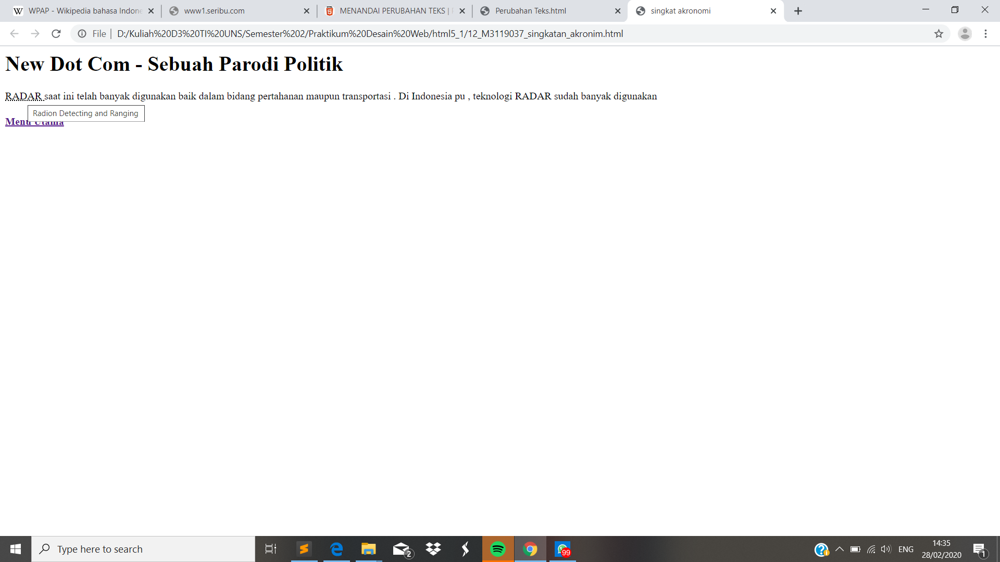

Singkatan Akronomi
//Singkatn Akronomi merupakan sebuah tag pada html yang digunakan untuk menjabarkan sebuah singkatan. Penjabaran singkatan ini dapat dilihat ketika cursor didekatkan pada tag singkatan. Untuk menggunakannya dapat dengan perintah <abbr title = "Radion Detecting and Ranging"> dan diahkhiri dengan <abbr>
Codingan
<!DOCKTYPE html>
<html>
<head>
<meta charset="UTF-8">
<title> singkat akronomi </title>
</head>
<body>
<h1> New Dot Com - Sebuah Parodi Politik </h2>
<p>
<abbr title = "Radion Detecting and Ranging"> RADAR </abbr>
saat ini telah banyak digunakan baik dalam bidang pertahanan maupun transportasi . Di Indonesia pu , teknologi RADAR sudah banyak digunakan
</p>
<h4> <a href="index.html">Menu Utama </a> </h4>
</body>
Tampilan Hasil Percobaan

Kesimpulan
Pada percobaan sigkatan akronomi kali ini kita dapat mengetahui kepanjangan yang dari sebuah singkatan. Dengan cara mendekatkan cursor kearah tag singkatan.